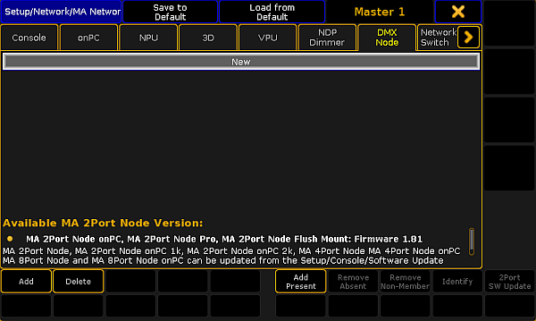

Add the MA xPort Nodes to the Network Configuration
Follow these guidelines to add the MA xPort Nodes to the network configuration.
Requirements:
- Connect the MA XPort Nodes with the console or the onPC via a network cable.
- The grandMA2 console and the MA xPort Nodes have to be in the same subnet if DMX is to be output.
- Open the MA Network Configuration.
-Press Setup and tap MA Network Configuration.
- The window MA Network Configuration opens.

Add xPort Nodes to the network configuration
- Tap DMX Node and then Add Present.
All nodes present in the network are displayed.
 MA Network Configuration – DMX Node
MA Network Configuration – DMX Node
The MA xPort Nodes have been added to the network configuration and can now be configured.